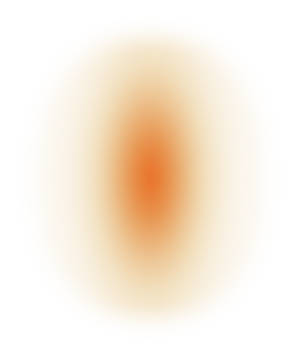
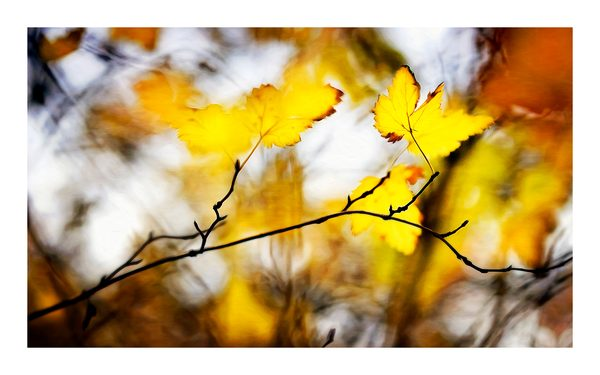

Lantern
&
Leaves
Photography
Home
Black & White
City & Architecture
Landscapes
Nature
Portraits
About
Contact
Lantern
&
Leaves
Photography
✦
Wanderings in light and leaf
Enter the galleries

The Galleries
Choose a path into the forest
Black & White
City & Architecture
Landscapes

Nature
Portraits